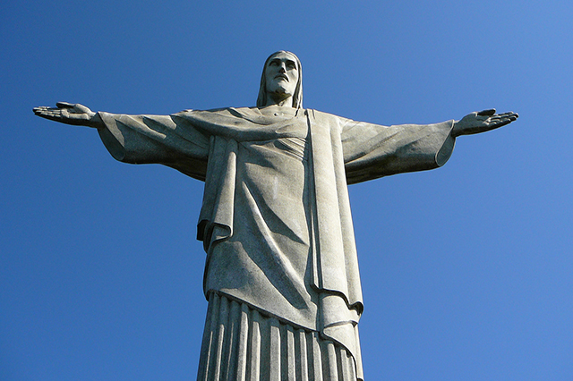
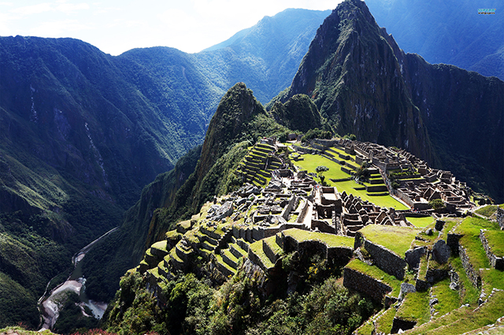
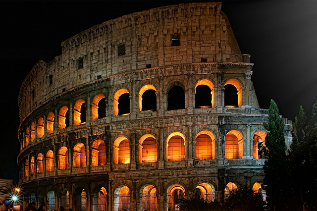
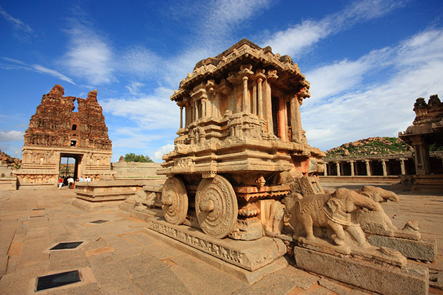
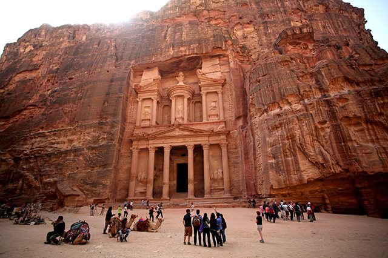
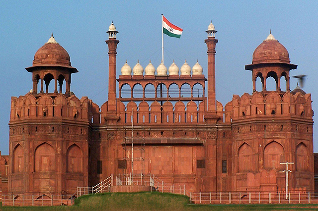
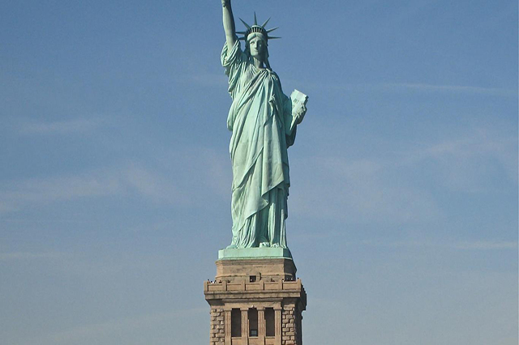
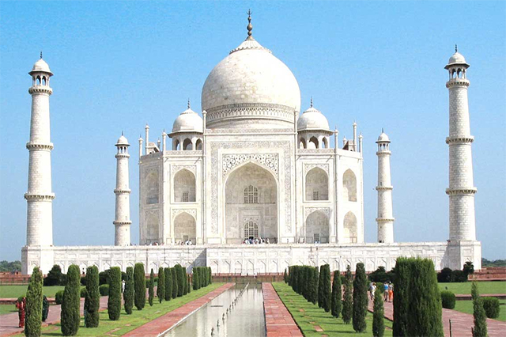
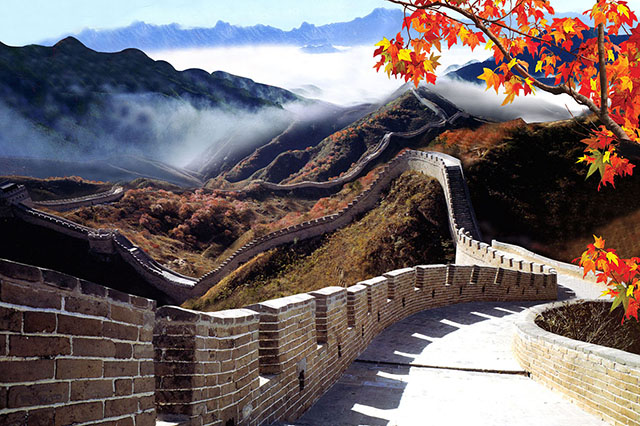

a

Christ The Redeemer
Christ the Redeemer is an Art Deco statue of Jesus Christ in Rio de Janeiro, Brazil, created by French sculptor Paul Landowski and built by the Brazilian engineer Heitor da Silva Costa, in collaboration with the French engineer Albert Caquot. The face was created by the Romanian artist Gheorghe Leonida. The statue is 30 metres (98 ft) tall, not including its 8-metre (26 ft) pedestal, and its arms stretch 28 metres (92 ft) wide.
The statue weighs 635 metric tons, and is located at the peak of the 700-metre (2,300 ft) Corcovado mountain in the Tijuca Forest National Park overlooking the city of Rio. A symbol of Christianity across the world, the statue has also become a cultural icon of both Rio de Janeiro and Brazil, and is listed as one of the New Seven Wonders of the World.
The statue weighs 635 metric tons, and is located at the peak of the 700-metre (2,300 ft) Corcovado mountain in the Tijuca Forest National Park overlooking the city of Rio. A symbol of Christianity across the world, the statue has also become a cultural icon of both Rio de Janeiro and Brazil, and is listed as one of the New Seven Wonders of the World.

Machu Pichu
Machu Picchu is on a mountain ridge above the Sacred Valley near Cuzco and through which the Urubamba River flows. Most archaeologists believe that Machu Picchu was built as an estate for the Inca emperor Pachacuti (1438-1472). Often mistakenly referred to as the "Lost City of the Incas", it is the most familiar icon of Inca civilization.
Machu Picchu was built around 1450, at the height of the Inca Empire. Its construction appears to date to the period of the two great Incas, Pachacutec Inca Yupanqui (1438–71) and Tupac Inca Yupanqui (1472–93).It was abandoned just over 100 years later, in 1572, as a belated result of the Spanish Conquest.
Machu Picchu was built around 1450, at the height of the Inca Empire. Its construction appears to date to the period of the two great Incas, Pachacutec Inca Yupanqui (1438–71) and Tupac Inca Yupanqui (1472–93).It was abandoned just over 100 years later, in 1572, as a belated result of the Spanish Conquest.

Rome Colosseum
he Colosseum, also known as the Flavian Amphitheatre, is an oval amphitheatre in the centre of the city of Rome, Italy. Built of concrete and sand, it is the largest amphitheatre ever built. The Colosseum is situated just east of the Roman Forum. Construction began under the emperor Vespasian in 72 AD, and was completed in 80 AD under his successor and heir Titus. Further modifications were made during the reign of Domitian (81–96).
The Colosseum could hold between 50,000 and 80,000 spectators, it was used for gladiatorial contests and public spectacles such as mock sea battles, animal hunts, executions, re-enactments of famous battles, and dramas based on Classical mythology.
The Colosseum could hold between 50,000 and 80,000 spectators, it was used for gladiatorial contests and public spectacles such as mock sea battles, animal hunts, executions, re-enactments of famous battles, and dramas based on Classical mythology.

Hampi
Hampi is a village in northern Karnataka, India. It was one of the richest and largest cities in the world during its prime. The name Hampi can also mean "champion". It is located within the ruins of the city of Vijayanagara, The empire boasted a massive army comprising close to a million men.
The site is significant historically and architecturally. The landscape abounds with large stones which have been used to make statues of Jaina deities.

Petra
Petra originally known as Raqmu to the Nabataeans, is a historical and archaeological city in the southern Jordanian governorate of Ma'an that is famous for its rock-cut architecture and water conduit system. Another name for Petra is the Rose City due to the color of the stone out of which it is carved.
Established possibly as early as 312 BC as the capital city of the Arab Nabataeans, it is a symbol of Jordan.The site remained unknown to the western world until 1812, when it was introduced by Swiss explorer Johann Ludwig Burckhardt. It was described as "a rose-red city half as old as time" in a Newdigate Prize-winning poem by John William Burgon. Petra was named amongst the New7Wonders of the World in 2007
Established possibly as early as 312 BC as the capital city of the Arab Nabataeans, it is a symbol of Jordan.The site remained unknown to the western world until 1812, when it was introduced by Swiss explorer Johann Ludwig Burckhardt. It was described as "a rose-red city half as old as time" in a Newdigate Prize-winning poem by John William Burgon. Petra was named amongst the New7Wonders of the World in 2007

RedFort
The Red Fort was the residence of the Mughal emperor of India for nearly 200 years, until 1857. It is located in the centre of Delhi and houses a number of museums. In addition to accommodating the emperors and their households, it was the ceremonial and political centre of Mughal government and the setting for events critically impacting the region.
Constructed in 1648 by the fifth Mughal Emperor Shah Jahan as the palace of his fortified capital Shahjahanabad, the Red Fort is named for its massive enclosing walls of red sandstone and is adjacent to the older Salimgarh Fort, built by Islam Shah Suri in 1546. The imperial apartments consist of a row of pavilions, connected by a water channel known as the Stream of Paradise. The fort complex is considered to represent the zenith of Mughal creativity under Shah Jahan and the palace was planned according to Islamic prototypes
Constructed in 1648 by the fifth Mughal Emperor Shah Jahan as the palace of his fortified capital Shahjahanabad, the Red Fort is named for its massive enclosing walls of red sandstone and is adjacent to the older Salimgarh Fort, built by Islam Shah Suri in 1546. The imperial apartments consist of a row of pavilions, connected by a water channel known as the Stream of Paradise. The fort complex is considered to represent the zenith of Mughal creativity under Shah Jahan and the palace was planned according to Islamic prototypes

Statue of Liberty
The Statue of Liberty (Liberty Enlightening the World) is a colossal neoclassical sculpture on Liberty Island in New York Harbor in New York City, in the United States. The copper statue, designed by Frederic Auguste Bartholdi, a French sculptor, was built by Gustave Eiffel and dedicated on October 28, 1886. It was a gift to the United States from the people of France.
The statue is of a robed female figure representing Libertas, the Roman goddess, who bears a torch and a tabula ansata upon which is inscribed the date of the American Declaration of Independence, July 4, 1776. A broken chain lies at her feet. The statue is an icon of freedom and of the United States, and was a welcoming sight to immigrants arriving from abroad.
The statue is of a robed female figure representing Libertas, the Roman goddess, who bears a torch and a tabula ansata upon which is inscribed the date of the American Declaration of Independence, July 4, 1776. A broken chain lies at her feet. The statue is an icon of freedom and of the United States, and was a welcoming sight to immigrants arriving from abroad.

Taj Mahal
The Taj Mahal is an ivory-white marble mausoleum on the south bank of the Yamuna river in the Indian city of Agra. It was commissioned in 1632 by the Mughal emperor, Shah Jahan, to house the tomb of his favorite wife, Mumtaz Mahal. The tomb is the centrepiece of a 42-acre complex, which includes a mosque and a guest house, and is set in formal gardens bounded on three sides by a crenellated wall.
Construction of the mausoleum was essentially completed in 1643 but work continued on other phases of the project for another 10 years. The Taj Mahal complex is believed to have been completed in its entirety in 1653 at a cost estimated at the time to be around 32 million rupees, which in 2015 would be approximately 52.8 billion rupees. The construction project employed some 20,000 artisans under the guidance of a board of architects led by the court architect to the emperor, Ustad Ahmad Lahauri.
Construction of the mausoleum was essentially completed in 1643 but work continued on other phases of the project for another 10 years. The Taj Mahal complex is believed to have been completed in its entirety in 1653 at a cost estimated at the time to be around 32 million rupees, which in 2015 would be approximately 52.8 billion rupees. The construction project employed some 20,000 artisans under the guidance of a board of architects led by the court architect to the emperor, Ustad Ahmad Lahauri.

Chichen Itza
Chichen Itza was a large pre-Columbian city built by the Maya people of the Terminal Classic period. The archaeological site is located in Tinúm Municipality, Yucatán State, Mexico.Chichen Itza was a major focal point in the Northern Maya Lowlands. The site exhibits a multitude of architectural styles, reminiscent of styles seen in central Mexico and of the Puuc and Chenes styles of the Northern Maya lowlands.
Chichen Itza was one of the largest Maya cities and it was likely to have been one of the mythical great cities, or Tollans, referred to in later Mesoamerican literature. The city may have had the most diverse population in the Maya world, a factor that could have contributed to the variety of architectural styles at the site.
Chichen Itza was one of the largest Maya cities and it was likely to have been one of the mythical great cities, or Tollans, referred to in later Mesoamerican literature. The city may have had the most diverse population in the Maya world, a factor that could have contributed to the variety of architectural styles at the site.

Great Wall Of China
The Great Wall of China is a series of fortifications made of stone, brick, tamped earth, wood, and other materials, generally built along an east-to-west line across the historical northern borders of China to protect the Chinese states and empires against the raids and invasions of the various nomadic groups of the Eurasian Steppe. Several walls were being built as early as the 7th century BCE; these, later joined together and made bigger and stronger, are now collectively referred to as the Great Wall. Especially famous is the wall built 220–206 BCE by Qin Shi Huang, the first Emperor of China. Little of that wall remains. Since then, the Great Wall has on and off been rebuilt, maintained, and enhanced; the majority of the existing wall is from the Ming Dynasty.